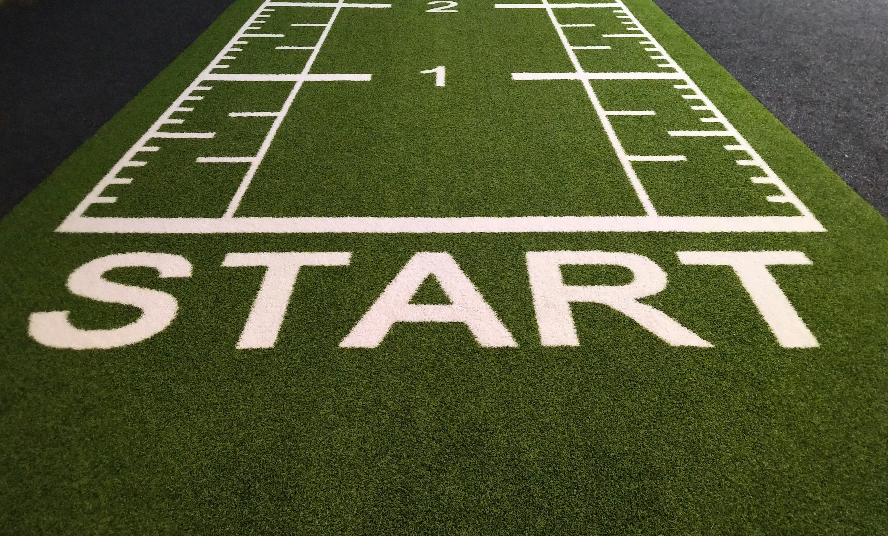

New Beginning

starting out fresh for the day is a very simple task to do
Daily Routine
- 7 to 9 am | The Morning Peak: Wake up,
eat breakfast, and tackle your top 1-3 hardest work tasks while your cognitive energy is highest.
-
9 am to 12 pm| Collaborative & Focused Work: Schedule your meetings, project collaborations, and deep-focus work.
-
12 pm to 1 pm| The Reset: Step away from your desk. Eat lunch and go for a short walk to clear your mind.
-
1 to 3 pm| The Afternoon Trough: Handle low-energy tasks like
answering emails, responding to messages, or organizing files.
-
3 to 5 pm | The Rebound: Take a quick coffee/snack break,
then tackle final smaller tasks or plan for the following day.
-
5 pm onwards | Unplug: Commute home, enjoy dinner, exercise, and allow yourself time to rest.
A daily schedule is a time-blocked action plan that outlines when you will tackle specific tasks, meals, and rest.
It boosts productivity and prevents procrastination by providing clear structure.
More Resources:
It is beneficial to schedule the day with a
scheduler app.
Click here to learn more